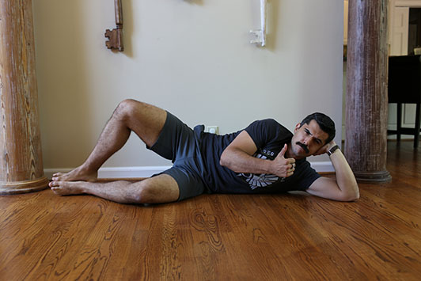
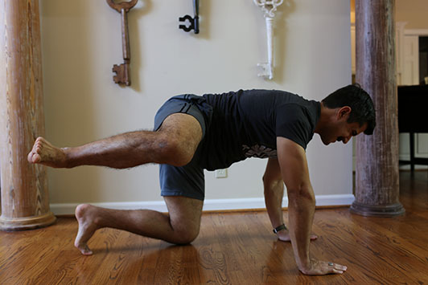
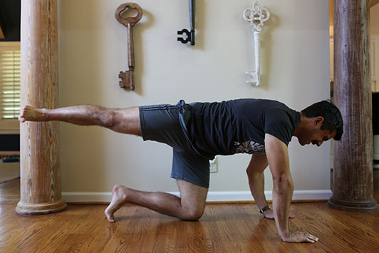

Begin with forward leg swings. Find something to hold for balance. Start off swinging your right leg backwards and forwards as high and as far back as you comfortably can. Do 20 swings and then switch legs.
Next are side-to-side swings. Again, find something to hold for balance. Swing your right leg out to the side as high as possible and then in front of you towards your left as far as you can go. Perform 20 swings and then switch legs. Depending on how tight you feel, you may need another set.
Simply squat down until your butt touches your ankles. Keep your heels firmly on the ground and your back straight. Hold that position for 30-60 seconds.
Intersperse a few short squatting sessions into your daily routine.
Start by placing your leg on a tabletop (you could also use your bed) with the knee bent at 90 degrees. Place one hand on the table and one hand on your foot for support. Lean forward and hold for 60-90 seconds. Then lean left to the 10 o’clock position and hold for 60-90 seconds. Lean right to the 2 o’clock position and hold for 60-90 seconds. Repeat on the other leg.
You actually don’t need a couch for this stretch, it just makes it a bit more comfortable (if that’s even possible). You can also do it on the floor by putting your knee against a wall.
For the “easy” version, place the knee of the leg you’re stretching against the back of your sofa. Place the foot of your other leg on the floor. Slowly raise your torso to a neutral spine position (i.e. standing straight and tall). As you raise your torso, squeeze your butt and abs. Hold the position for up to four minutes. Switch and repeat on the other leg. You should feel things really stretch in your hip flexor area — just don’t push yourself too hard.
To up the ante, bring your non-stretching leg up onto the seat of the couch. Keeping a straight, neutral spine, squeeze the butt and abs and work your way up to holding the position for four minutes. Keep in mind that it may be awhile before you can get your torso to a straight position. When I first started doing this stretch the “hard way,” I could only raise my torso to a 45-degree angle and I’d have to support myself with my hand on the floor. I was eventually able to move to a straight position after two weeks of dedicated stretching. The difference in the mobility of my hips was (and continues to be) significant.
Lay on the ground with your knees bent and feet flat on the floor. Put a padded barbell across your hips and grab it with an overhand grip about shoulder-width apart. Raise your waist off the ground while squeezing your glutes until your hips are aligned with your body. Return to the starting position, and complete three sets of 10 reps.
Aim to do this exercise one to two times a week. You can add weight as you get stronger. If you can’t do it with the weight of the barbell, try un-weighted bridges.
Lay on your right side with your hips and knees bent at 45 degrees.
Keeping your feet together, raise your upper knee as high as you can without moving your pelvis. Don’t allow your lower leg to move off the floor. Pause, then return to a starting position. Do 20 reps on one side and then repeat on the other side. Perform three sets one to two times a week.
Get down on your hands and knees with your palms flat on the floor and your arms shoulder-width apart and knees hip-width apart.
Maintain a straight, neutral spine and slowly raise your right leg out to the side as high as you can while keeping it bent, just like a dog would. Lower and repeat 15 times. Repeat with the other leg. Do two to three sets once or twice a week.
For added glute activation, extend your leg straight after you’ve lifted it up.